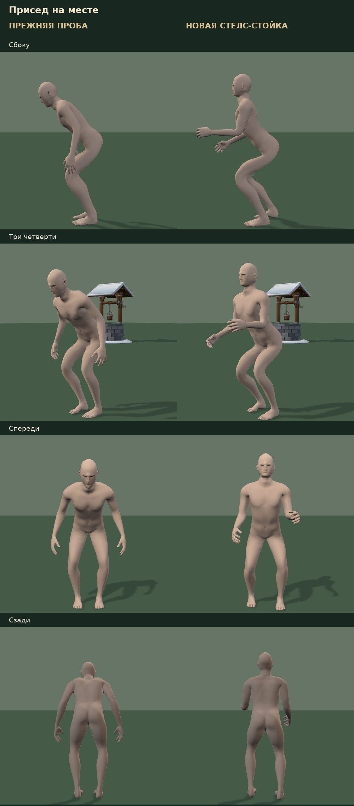
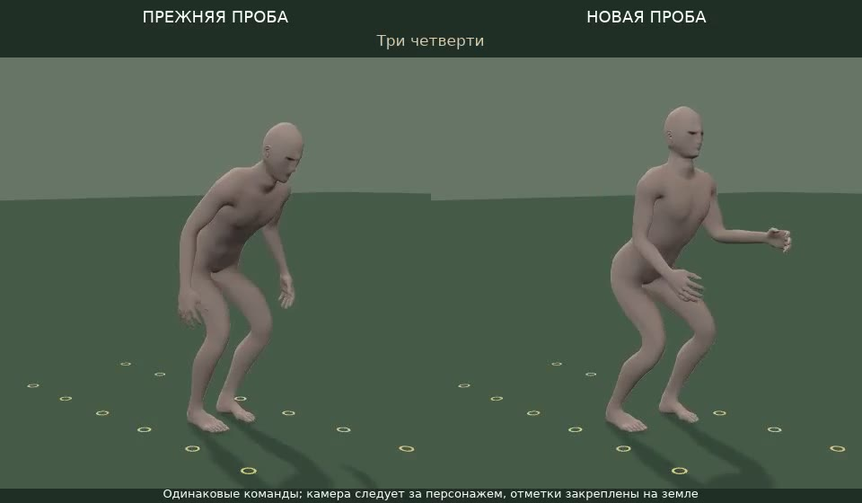
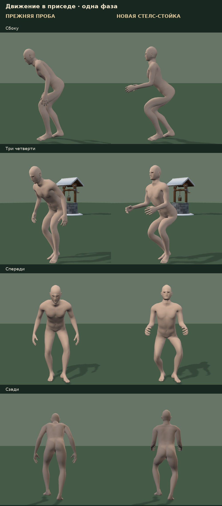

Персонаж · проба стелс-стойки
Собранная стойка вместо сутулости.
Переработали присед: корпус ровнее, взгляд направлен вперёд, ноги согнуты, а руки приподняты и готовы к движению. Сравните два варианта на месте и при ходьбе.
Это отдельный вариант; прежняя сцена сохранена без изменений.

01 / До и после
Вход, движение и выход.
Одинаковая последовательность команд с четырёх сторон. Персонажи перемещаются, отметки на земле остаются на месте.
18 секунд · без звука · отметки добавлены только для записи
02 / Четыре взгляда
На месте и в шаге.
Кадры сняты с одинаковой камерой и фазой в обеих сценах. Для оценки движения используйте также видео и интерактивную сцену.

Шаг в приседе
Одна и та же фаза цикла; положение ног и рук скорректировано для новой стойки.
Открыть крупнее ↗Это рабочая анимационная проба, не физическая симуляция. В выборочных проверках стопы не проходили сквозь пол, но динамической фиксации стоп нет: при поворотах и переходах возможно скольжение. Проверки не охватывают все позы и устройства.